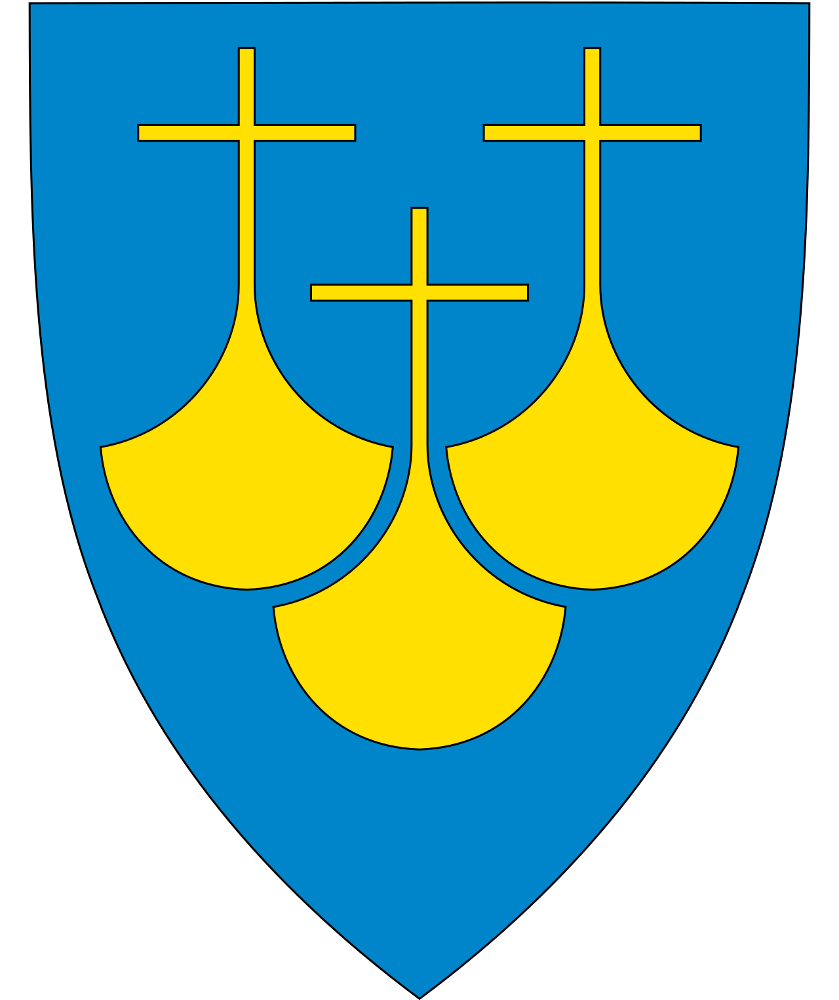

HIKING IN MØRE AND ROMSDAL
Møre and Romsdal
Møre and Romsdal is one of the 18 countys in Norway and is located on the westcoast. It's known for the steep and pointed mountain ranges but also the idyllic cities Ålesund, Molde and Kristiansund.
You have probably heard of Trollveggen, Romsdalshorn and Puttegga which are the most famous mountains in Møre and Romsdal. This site shows you the best places to go hiking.
PUTTEGGA
Location: Rauma and Norddal
This is the highest mountain in Møre and Romsdal with a height of 1999 meters above sea level. The ascent from Pyttbua is a roundtrip that takes about 5 hours and is 6km long. You will have a spectacular view that you’ve never seen before.
ROMSDALSHORN
Location: Rauma
This foot trip takes about 5 hours one way and is 11,2km long. This is considered as Norway's most beautiful hike and the top is 1.216 meters above sea level.
TROLLVEGGEN
Location: Rauma
Trollveggen is Europe’s tallest mountain wall with a drop of 1.000 meters. The overall height is 1.700 meters above sea level and is definitely a hike to try if you’re not afraid of heights. Try to drive up Trollstigen for the wildest road in Norway and walk from there.
RAMPESTREKEN
Location: Åndalsnes
This roundtrip takes about 2 hours and is 3,6km long. When you reach the point of view at 550 meters above sea level, you can take a walk on to the 8 meters long free fall pier and watch out to see Isfjorden, Åndalsnes and the marvelous mountains.
MANNEN
Location: Lyngheim
You have probably heard about the man falling in the Norwegian news but this man is actually a mountain. Even tho this mountain is on the hiking list you should definitely NOT take a hike on this top. This is just a mountain to admire from the road while driving to the other mountains.
GEIRANGERFJORDEN
Location: Geiranger
If you have seen the Norwegian movie "The Wave" and you want to see if Geiranger is still there, then you should take a trip to Geirangerfjorden. With its small and narrow fjord against the tall and massive mountains you have endless possibilities to take a hike.

MARDALSFOSSEN
Location: Mardalen
To see the beautiful Mardalsfossen you only have to walk 30min from the parking in Mardalen. There you can find information about the waterfall, a kiosk and som benches to eat your meal. It’s the 4th tallest free-fall in the world and has a fall of 297 meters.
THE ATLANTIC ROAD
Location: Vevang/Kårvåg
The most iconic road in Norway is The Atlantic Road. It goes between Vevang and Kårvåg and is 8,3km long. On the middle of the road there is a parking lot where you can take a little hike around the islet and stirr at the blank ocean and hear the gulls and see the waves crash into land.